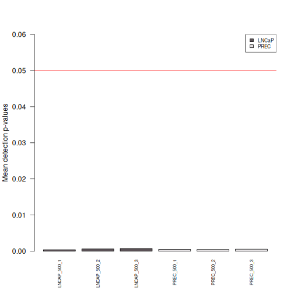
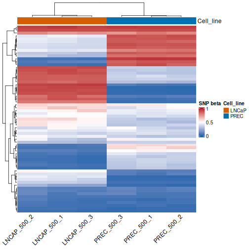
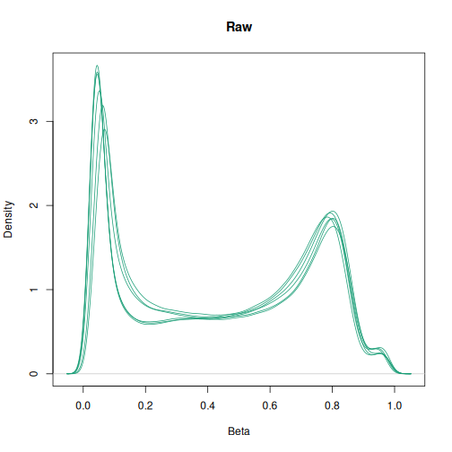
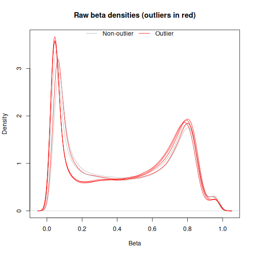
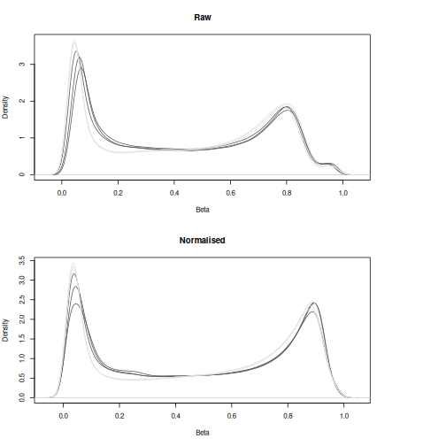
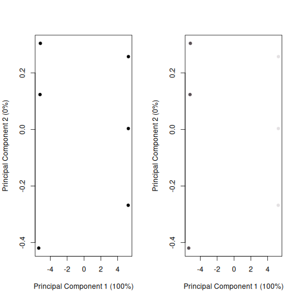
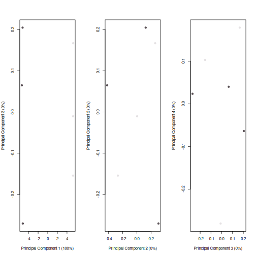
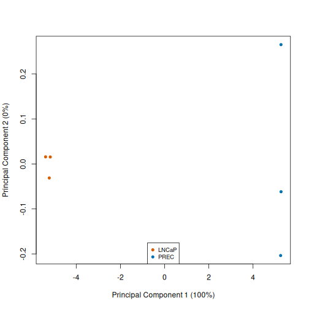

All in One View
Content from Introduction: loading packages and downloading data
Last updated on 2026-10-09 | Edit this page
Overview
Questions
- How is whole genome methylation interrogated?
- How are methylation values commonly reported?
- What preliminary R packages and data is necessary to begin methylation analysis?
Objectives
- Setting up the R environment and required packages
- Create a sample table and define the variable of interest
- Download the six publicly available sample data from GEO
- Import the IDAT files into a
minfiobject
Introduction
Methylation in the human genome is known to be associated with development and disease. The Illumina Infinium methylation arrays are by far the most common way to interrogate methylation across the human genome. This workshop provides an easy and reproducible workflow using multiple packages for the analysis of methylation array data. Specifically, we demonstrate the steps involved in a typical differential methylation analysis pipeline including: quality control, filtering, normalization, data exploration and statistical testing for probe-wise differential methylation.
DNA methylation, the addition of a methyl group to a CG dinucleotide of the DNA, is the most extensively studied epigenetic mark due to its role in both development and disease. Although DNA methylation can be measured in several ways, the epigenetics community has enthusiastically embraced the Illumina HumanMethylation450 (450k) array as a cost-effective way to assay methylation across the human genome. Illumina has increased the genomic coverage of the platform with their MethylationEPIC (850k) array, and more recently MethylationEPICv2 (935k) covering to >935,000 sites. As methylation arrays are likely to remain popular for measuring methylation for the foreseeable future, it is necessary to provide robust workflows for methylation array analysis.
For each CpG, there are two measurements: a methylated intensity (denoted by 𝑀) and an unmethylated intensity (denoted by 𝑈). These intensity values can be used to determine the proportion of methylation at each CpG locus. Methylation levels are commonly reported as either beta values (𝛽=𝑀/(𝑀+𝑈)) or M-values (𝑀𝑣𝑎𝑙𝑢𝑒=𝑙𝑜𝑔2(𝑀/𝑈)).
Beta values (proportion of methylation at a particular CpG site) are generally preferable for describing the level of methylation at a locus or for graphical presentation because percentage methylation is easily interpretable. M-values (log2 ratio of methylated to unmethylated signal intensity) are more appropriate for statistical testing.
Load packages
Complete the setup instructions first. Open RStudio and create a project using File > New Project > New Directory > New Project, or open your existing workshop project. Create an R script, and run the chunks below in order.
Installing a package downloads it to your computer. Loading it with
library() makes its functions available in the current
session. Load the packages again whenever you restart R.
OUTPUT
── Attaching core tidyverse packages ──────────────────────── tidyverse 2.0.0 ──
✔ dplyr 1.2.1 ✔ readr 2.2.0
✔ forcats 1.0.1 ✔ stringr 1.6.0
✔ ggplot2 4.0.3 ✔ tibble 3.3.1
✔ lubridate 1.9.5 ✔ tidyr 1.3.2
✔ purrr 1.2.2
── Conflicts ────────────────────────────────────────── tidyverse_conflicts() ──
✖ dplyr::filter() masks stats::filter()
✖ dplyr::lag() masks stats::lag()
ℹ Use the conflicted package (<http://conflicted.r-lib.org/>) to force all conflicts to become errors
Attaching package: 'reshape2'
The following object is masked from 'package:tidyr':
smiths
Loading required package: BiocGenerics
Loading required package: generics
Attaching package: 'generics'
The following object is masked from 'package:lubridate':
as.difftime
The following object is masked from 'package:dplyr':
explain
The following objects are masked from 'package:base':
as.difftime, as.factor, as.ordered, intersect, is.element, setdiff,
setequal, union
Attaching package: 'BiocGenerics'
The following object is masked from 'package:dplyr':
combine
The following objects are masked from 'package:stats':
IQR, mad, sd, var, xtabs
The following objects are masked from 'package:base':
anyDuplicated, aperm, append, as.data.frame, basename, cbind,
colnames, dirname, do.call, duplicated, eval, evalq, Filter, Find,
get, grep, grepl, is.unsorted, lapply, Map, mapply, match, mget,
order, paste, pmax, pmax.int, pmin, pmin.int, Position, rank,
rbind, Reduce, rownames, sapply, saveRDS, table, tapply, unique,
unsplit, which.max, which.min
Loading required package: GenomicRanges
Loading required package: stats4
Loading required package: S4Vectors
Attaching package: 'S4Vectors'
The following objects are masked from 'package:lubridate':
second, second<-
The following objects are masked from 'package:dplyr':
first, rename
The following object is masked from 'package:tidyr':
expand
The following object is masked from 'package:utils':
findMatches
The following objects are masked from 'package:base':
expand.grid, I, unname
Loading required package: IRanges
Attaching package: 'IRanges'
The following object is masked from 'package:lubridate':
%within%
The following objects are masked from 'package:dplyr':
collapse, desc, slice
The following object is masked from 'package:purrr':
reduce
Loading required package: Seqinfo
Loading required package: SummarizedExperiment
Loading required package: MatrixGenerics
Loading required package: matrixStats
Attaching package: 'matrixStats'
The following object is masked from 'package:dplyr':
count
Attaching package: 'MatrixGenerics'
The following objects are masked from 'package:matrixStats':
colAlls, colAnyNAs, colAnys, colAvgsPerRowSet, colCollapse,
colCounts, colCummaxs, colCummins, colCumprods, colCumsums,
colDiffs, colIQRDiffs, colIQRs, colLogSumExps, colMadDiffs,
colMads, colMaxs, colMeans2, colMedians, colMins, colOrderStats,
colProds, colQuantiles, colRanges, colRanks, colSdDiffs, colSds,
colSums2, colTabulates, colVarDiffs, colVars, colWeightedMads,
colWeightedMeans, colWeightedMedians, colWeightedSds,
colWeightedVars, rowAlls, rowAnyNAs, rowAnys, rowAvgsPerColSet,
rowCollapse, rowCounts, rowCummaxs, rowCummins, rowCumprods,
rowCumsums, rowDiffs, rowIQRDiffs, rowIQRs, rowLogSumExps,
rowMadDiffs, rowMads, rowMaxs, rowMeans2, rowMedians, rowMins,
rowOrderStats, rowProds, rowQuantiles, rowRanges, rowRanks,
rowSdDiffs, rowSds, rowSums2, rowTabulates, rowVarDiffs, rowVars,
rowWeightedMads, rowWeightedMeans, rowWeightedMedians,
rowWeightedSds, rowWeightedVars
Loading required package: Biobase
Welcome to Bioconductor
Vignettes contain introductory material; view with
'browseVignettes()'. To cite Bioconductor, see
'citation("Biobase")', and for packages 'citation("pkgname")'.
Attaching package: 'Biobase'
The following object is masked from 'package:MatrixGenerics':
rowMedians
The following objects are masked from 'package:matrixStats':
anyMissing, rowMediansWARNING
Warning: replacing previous import 'S4Arrays::makeNindexFromArrayViewport' by
'DelayedArray::makeNindexFromArrayViewport' when loading 'SummarizedExperiment'OUTPUT
Loading required package: Biostrings
Loading required package: XVector
Attaching package: 'XVector'
The following object is masked from 'package:purrr':
compact
Attaching package: 'Biostrings'
The following object is masked from 'package:base':
strsplit
Loading required package: bumphunter
Loading required package: foreach
Attaching package: 'foreach'
The following objects are masked from 'package:purrr':
accumulate, when
Loading required package: iterators
Loading required package: parallel
Loading required package: locfit
locfit 1.5-9.12 2025-03-05
Attaching package: 'locfit'
The following object is masked from 'package:purrr':
noneWARNING
Warning: replacing previous import 'S4Arrays::makeNindexFromArrayViewport' by
'DelayedArray::makeNindexFromArrayViewport' when loading 'HDF5Array'OUTPUT
Setting options('download.file.method.GEOquery'='auto')
Setting options('GEOquery.inmemory.gpl'=FALSE)
Attaching package: 'limma'
The following object is masked from 'package:BiocGenerics':
plotMA
Loading required package: BiocFileCache
Loading required package: dbplyr
Attaching package: 'dbplyr'
The following objects are masked from 'package:dplyr':
ident, sql, sql_escape_ident, sql_escape_string
Attaching package: 'AnnotationHub'
The following object is masked from 'package:Biobase':
cache
Attaching package: 'methylKit'
The following object is masked from 'package:dplyr':
select
The following object is masked from 'package:tidyr':
unite
Loading required package: IlluminaHumanMethylation450kanno.ilmn12.hg19
Attaching package: 'IlluminaHumanMethylation450kanno.ilmn12.hg19'
The following objects are masked from 'package:IlluminaHumanMethylationEPICv2anno.20a1.hg38':
Islands.UCSC, Locations, Manifest, Other, SNPs.141CommonSingle,
SNPs.142CommonSingle, SNPs.144CommonSingle, SNPs.146CommonSingle,
SNPs.147CommonSingle, SNPs.Illumina
Loading required package: IlluminaHumanMethylationEPICanno.ilm10b4.hg19
Attaching package: 'IlluminaHumanMethylationEPICanno.ilm10b4.hg19'
The following objects are masked from 'package:IlluminaHumanMethylation450kanno.ilmn12.hg19':
Islands.UCSC, Locations, Manifest, Other, SNPs.132CommonSingle,
SNPs.135CommonSingle, SNPs.137CommonSingle, SNPs.138CommonSingle,
SNPs.141CommonSingle, SNPs.142CommonSingle, SNPs.144CommonSingle,
SNPs.146CommonSingle, SNPs.147CommonSingle, SNPs.Illumina
The following objects are masked from 'package:IlluminaHumanMethylationEPICv2anno.20a1.hg38':
Islands.UCSC, Locations, Manifest, Other, SNPs.141CommonSingle,
SNPs.142CommonSingle, SNPs.144CommonSingle, SNPs.146CommonSingle,
SNPs.147CommonSingle, SNPs.Illumina
clusterProfiler v4.20.0 Learn more at https://yulab-smu.top/contribution-knowledge-mining/
Please cite:
G Yu. Background bias in functional enrichment analysis: Insights from
clusterProfiler. The Innovation Life. 2026, 4(1):100181
Attaching package: 'clusterProfiler'
The following object is masked from 'package:methylKit':
select
The following object is masked from 'package:XVector':
slice
The following object is masked from 'package:IRanges':
slice
The following object is masked from 'package:S4Vectors':
rename
The following object is masked from 'package:purrr':
simplify
The following object is masked from 'package:stats':
filter
Loading required package: AnnotationDbi
Attaching package: 'AnnotationDbi'
The following object is masked from 'package:clusterProfiler':
select
The following object is masked from 'package:methylKit':
select
The following object is masked from 'package:dplyr':
select
Loading required package: grid
========================================
ComplexHeatmap version 2.28.0
Bioconductor page: http://bioconductor.org/packages/ComplexHeatmap/
Github page: https://github.com/jokergoo/ComplexHeatmap
Documentation: http://jokergoo.github.io/ComplexHeatmap-reference
If you use it in published research, please cite either one:
- Gu, Z. Complex Heatmap Visualization. iMeta 2022.
- Gu, Z. Complex heatmaps reveal patterns and correlations in multidimensional
genomic data. Bioinformatics 2016.
The new InteractiveComplexHeatmap package can directly export static
complex heatmaps into an interactive Shiny app with zero effort. Have a try!
This message can be suppressed by:
suppressPackageStartupMessages(library(ComplexHeatmap))
========================================
Attaching package: 'gridExtra'
The following object is masked from 'package:minfi':
combine
The following object is masked from 'package:Biobase':
combine
The following object is masked from 'package:BiocGenerics':
combine
The following object is masked from 'package:dplyr':
combineLoad annotation data
This is information that describes each CpG probe on the Illumina EPICv2 methylation array. It tells you where each probe is located in the genome and which genes or genomic features it is associated with.
R
epic <- getAnnotation(IlluminaHumanMethylationEPICv2anno.20a1.hg38)
head(epic)
OUTPUT
DataFrame with 6 rows and 42 columns
chr pos strand Name AddressA
<character> <integer> <character> <character> <character>
cg25324105_BC11 chr19 37692358 + cg25324105_BC11 1754126
cg25383568_TC11 chr19 38727081 - cg25383568_TC11 79792482
cg25455143_BC11 chr19 1591515 - cg25455143_BC11 80699190
cg25459778_BC11 chr16 1614581 + cg25459778_BC11 60797262
cg25487775_BC11 chr2 161237458 + cg25487775_BC11 5799427
cg25595446_BC11 chr19 49677322 + cg25595446_BC11 65640459
AddressB ProbeSeqA ProbeSeqB
<character> <character> <character>
cg25324105_BC11 99753217 ATTTATAAACTAATAACCCA.. GTTTATAAACTAATAACCCG..
cg25383568_TC11 69667133 AAACCAAAAAAATAACAAAC.. AAACCGAAAAAATAACAAAC..
cg25455143_BC11 7659147 ATAAAAAAAAATATACAACT.. ATAAAAAAAAATATACGACT..
cg25459778_BC11 65710482 AAAAATTTAAAACAAACAAC.. AAAAATTTAAAACAAACAAC..
cg25487775_BC11 89606481 AAAAACAACCTAAAAAACAA.. AAAAACAACCTAAAAAACAA..
cg25595446_BC11 39619855 AATAAAAATAACAACAACCA.. AATAAAAATAACGACAACCG..
Type NextBase Color Probe_rs Probe_maf
<character> <character> <character> <character> <numeric>
cg25324105_BC11 I A Red NA NA
cg25383568_TC11 I C Grn NA NA
cg25455143_BC11 I T Red NA NA
cg25459778_BC11 I C Grn NA NA
cg25487775_BC11 I A Red NA NA
cg25595446_BC11 I C Grn NA NA
CpG_rs CpG_maf SBE_rs SBE_maf
<character> <numeric> <character> <numeric>
cg25324105_BC11 NA NA NA NA
cg25383568_TC11 NA NA NA NA
cg25455143_BC11 NA NA NA NA
cg25459778_BC11 NA NA NA NA
cg25487775_BC11 NA NA NA NA
cg25595446_BC11 NA NA NA NA
Islands_Name Relation_to_Island col
<character> <character> <character>
cg25324105_BC11 chr19:37691892-37692.. Island R
cg25383568_TC11 chr19:38726890-38727.. Island G
cg25455143_BC11 chr19:1591428-159162.. Island R
cg25459778_BC11 chr16:1610053-1615094 Island G
cg25487775_BC11 chr2:161237949-16123.. Shore R
cg25595446_BC11 chr19:49676753-49677.. Island G
Probe_Type Strand_FR Strand_TB Strand_CO Infinium_Design
<character> <character> <character> <character> <character>
cg25324105_BC11 cg F B C 1
cg25383568_TC11 cg R T C 1
cg25455143_BC11 cg R B C 1
cg25459778_BC11 cg F B C 1
cg25487775_BC11 cg F B C 1
cg25595446_BC11 cg F B C 1
Species Rep_Num UCSC_RefGene_Group
<character> <character> <character>
cg25324105_BC11 Human 1 TSS200;TSS200;TSS200..
cg25383568_TC11 Human 1 exon_18;exon_18
cg25455143_BC11 Human 1
cg25459778_BC11 Human 1
cg25487775_BC11 Human 1
cg25595446_BC11 Human 1
UCSC_RefGene_Name UCSC_RefGene_Accession
<character> <character>
cg25324105_BC11 ZNF781;ZNF781;ZNF781.. NR_173332.1;NR_17333..
cg25383568_TC11 ACTN4;ACTN4 NM_001322033.2_2;NM_..
cg25455143_BC11
cg25459778_BC11
cg25487775_BC11
cg25595446_BC11
GencodeV41_Group GencodeV41_Name
<character> <character>
cg25324105_BC11 TSS200;TSS200;TSS200.. ENSG00000120784.17;E..
cg25383568_TC11 exon_18;exon_18;exon.. ACTN4;ACTN4;ACTN4;AC..
cg25455143_BC11
cg25459778_BC11 TSS200 ENSG00000007545.16
cg25487775_BC11
cg25595446_BC11 exon_1;TSS200;TSS1500 PRMT1;ENSG0000012645..
GencodeV41_Accession Phantom5_Enhancers HMM_Island
<character> <character> <character>
cg25324105_BC11 ENST00000587199.5;EN..
cg25383568_TC11 ENST00000252699.7;EN..
cg25455143_BC11
cg25459778_BC11 ENST00000293925.9
cg25487775_BC11
cg25595446_BC11 ENST00000524771.5;EN..
Regulatory_Feature_Group Methyl450_Enhancer DMR
<character> <character> <character>
cg25324105_BC11 Unclassified_Cell_ty.. TRUE DMR
cg25383568_TC11 Gene_Associated_Cell.. TRUE
cg25455143_BC11 FALSE
cg25459778_BC11 FALSE
cg25487775_BC11 FALSE
cg25595446_BC11 Promoter_Associated TRUE
Methyl450_Loci Methyl27_Loci EPICv1_Loci Manifest_probe_match
<character> <character> <character> <character>
cg25324105_BC11 cg25324105 cg25324105 TRUE
cg25383568_TC11 cg25383568 cg25383568 TRUE
cg25455143_BC11 cg25455143 cg25455143 TRUE
cg25459778_BC11 cg25459778 cg25459778 cg25459778 TRUE
cg25487775_BC11 cg25487775 cg25487775 TRUE
cg25595446_BC11 cg25595446 cg25595446 cg25595446 TRUEDownload data
For this tutorial we are using the publicly available LNCaP and PREC cell lines (500 ng DNA input) from Peters et al. (2024), available from GEO (GSE240469). This contains data for 3 technical replicates per cell line. The code below executes when this episode renders. It downloads the IDAT files, imports the raw measurements, and saves the objects for the next episode.
If you would like to use your own data, create a sample table and variables of interest in the same format, with your own IDAT files, samples and variables. The GEO download chunk is only needed for data hosted on GEO.
Create the sample table
Each row describes one sample. Accession identifies the
GEO sample, Name matches its filename label, and
Type identifies the cell line to compare.
R
# Create the sample table for IDAT downloads. Replace this table with your own sample information when using your own data.
targets <- data.frame(
Accession = c(
"GSM7698438",
"GSM7698446",
"GSM7698462",
"GSM7698435",
"GSM7698443",
"GSM7698459"
),
Name = c(
"LNCAP_500_1",
"LNCAP_500_2",
"LNCAP_500_3",
"PREC_500_1",
"PREC_500_2",
"PREC_500_3"
),
Type = c("LNCaP", "LNCaP", "LNCaP", "PREC", "PREC", "PREC")
)
targets$Name2 <- paste(
targets$Accession, targets$Name, sep = "_"
)
# Define the variable of interest and convert it to a factor.
variable.of.choice <- as.factor(targets$Type)
targets
OUTPUT
Accession Name Type Name2
1 GSM7698438 LNCAP_500_1 LNCaP GSM7698438_LNCAP_500_1
2 GSM7698446 LNCAP_500_2 LNCaP GSM7698446_LNCAP_500_2
3 GSM7698462 LNCAP_500_3 LNCaP GSM7698462_LNCAP_500_3
4 GSM7698435 PREC_500_1 PREC GSM7698435_PREC_500_1
5 GSM7698443 PREC_500_2 PREC GSM7698443_PREC_500_2
6 GSM7698459 PREC_500_3 PREC GSM7698459_PREC_500_3Download the IDAT files
The following chunk downloads the IDAT files for the six accessions
in targets. Each sample is saved in its own accession-named
folder within your current project directory.
R
# Download only IDAT files for the selected tutorial samples.
gsmlist <- lapply(
targets$Accession,
GEOquery::getGEOSuppFiles,
makeDirectory = TRUE,
baseDir = getwd(),
filter_regex = "[.]idat([.]gz)?$"
)
OUTPUT
Using locally cached version of supplementary file(s) GSM7698438 found here:
/__w/intro-to-methylation-array/intro-to-methylation-array/site/built/GSM7698438/GSM7698438_LNCAP_500_1_Grn.idat.gz OUTPUT
Using locally cached version of supplementary file(s) GSM7698438 found here:
/__w/intro-to-methylation-array/intro-to-methylation-array/site/built/GSM7698438/GSM7698438_LNCAP_500_1_Red.idat.gz OUTPUT
Using locally cached version of supplementary file(s) GSM7698446 found here:
/__w/intro-to-methylation-array/intro-to-methylation-array/site/built/GSM7698446/GSM7698446_LNCAP_500_2_Grn.idat.gz OUTPUT
Using locally cached version of supplementary file(s) GSM7698446 found here:
/__w/intro-to-methylation-array/intro-to-methylation-array/site/built/GSM7698446/GSM7698446_LNCAP_500_2_Red.idat.gz OUTPUT
Using locally cached version of supplementary file(s) GSM7698462 found here:
/__w/intro-to-methylation-array/intro-to-methylation-array/site/built/GSM7698462/GSM7698462_LNCAP_500_3_Grn.idat.gz OUTPUT
Using locally cached version of supplementary file(s) GSM7698462 found here:
/__w/intro-to-methylation-array/intro-to-methylation-array/site/built/GSM7698462/GSM7698462_LNCAP_500_3_Red.idat.gz OUTPUT
Using locally cached version of supplementary file(s) GSM7698435 found here:
/__w/intro-to-methylation-array/intro-to-methylation-array/site/built/GSM7698435/GSM7698435_PREC_500_1_Grn.idat.gz OUTPUT
Using locally cached version of supplementary file(s) GSM7698435 found here:
/__w/intro-to-methylation-array/intro-to-methylation-array/site/built/GSM7698435/GSM7698435_PREC_500_1_Red.idat.gz OUTPUT
Using locally cached version of supplementary file(s) GSM7698443 found here:
/__w/intro-to-methylation-array/intro-to-methylation-array/site/built/GSM7698443/GSM7698443_PREC_500_2_Grn.idat.gz OUTPUT
Using locally cached version of supplementary file(s) GSM7698443 found here:
/__w/intro-to-methylation-array/intro-to-methylation-array/site/built/GSM7698443/GSM7698443_PREC_500_2_Red.idat.gz OUTPUT
Using locally cached version of supplementary file(s) GSM7698459 found here:
/__w/intro-to-methylation-array/intro-to-methylation-array/site/built/GSM7698459/GSM7698459_PREC_500_3_Grn.idat.gz OUTPUT
Using locally cached version of supplementary file(s) GSM7698459 found here:
/__w/intro-to-methylation-array/intro-to-methylation-array/site/built/GSM7698459/GSM7698459_PREC_500_3_Red.idat.gz R
names(gsmlist) <- targets$Accession
Read in .idats
Add the sample names and file paths to targets,
preserving its sample order. Basename is the path to each
file pair.
R
# Link the sample information to the downloaded IDAT files.
targets$Sample <- targets$Name
targets$Basename <- file.path(
getwd(), targets$Accession, targets$Name2
)
# Read in raw data from the red/green IDAT files.
rgSet <- read.metharray.exp(targets = targets)
sampleNames(rgSet) <- targets$Sample
rgSet@annotation <- c(
array = "IlluminaHumanMethylationEPICv2",
annotation = "20a1.hg38"
)
rgSet
OUTPUT
class: RGChannelSet
dim: 1105209 6
metadata(0):
assays(2): Green Red
rownames(1105209): 1600157 1600179 ... 99810982 99810990
rowData names(0):
colnames(6): LNCAP_500_1 LNCAP_500_2 ... PREC_500_2 PREC_500_3
colData names(7): Accession Name ... Basename filenames
Annotation
array: IlluminaHumanMethylationEPICv2
annotation: 20a1.hg38rgSet contains the raw intensities for the six samples.
For your own data, set targets$Basename to your file paths
and use the annotation matching your array type. Quality control,
filtering and normalisation follow in the next episode.
Save the input objects for reuse
targets contains sample information; rgSet
contains the raw measurements.
R
dir.create("data", showWarnings = FALSE)
saveRDS(targets, "data/targets.rds")
saveRDS(rgSet, "data/rgSet.rds")
- Raw Illumina methylation array data are stored in
.idatfiles, with one red-channel and one green-channel file per sample. - The
targetsdata frame holds the sample metadata, linking each sample’s name and cell-line group to its IDAT file paths. -
read.metharray.exp(targets = targets)reads the raw intensities intorgSet, anRGChannelSetobject, ready for quality control and preprocessing.
Content from First steps: quality control, filtering, normalisation and basic visualisation
Last updated on 2026-10-09 | Edit this page
Overview
Questions
- Why should we filter poor-quality samples and unreliable probes before differential methylation analysis?
- What do detection p-values tell us about methylation array quality?
- How can density and MDS plots help us identify unusual samples and unwanted variation?
- How can biological differences, sample preparation and array batch affect methylation profiles?
- Why do we normalise methylation array data, and why use functional normalisation for this comparison?
- Why might we exclude probes based on chromosome location, SNPs or cross-reactivity?
- How can we assess the effects of normalisation and filtering without mistaking biological differences for technical variation?
Objectives
- Calculate and interpret detection p-values to assess sample and probe quality
- Apply sample and probe filters while keeping methylation measurements and sample metadata aligned
- Create and interpret beta-value density plots and MDS plots to explore sample relationships and potential quality problems
- Distinguish possible biological differences from variation associated with sample preparation or array batch
- Perform functional normalisation and explain why it suits a cancer–normal comparison
- Explain the rationale and limitations of chromosome, SNP and cross-reactivity filters
- Compare plots before and after processing to assess changes in methylation distributions and sample relationships
- Recognise when batch effects or confounding require further investigation beyond normalisation
Quality control
A detection p-value measures whether a probe’s signal can be distinguished from background. Smaller values support detectable signal.
We calculate the detection p-values (detP) and examine
their mean across probes for each sample to identify potentially failed
samples. The red line marks a mean detection p-value of 0.05. The PDF
report provides additional sample quality information.
R
detP <- detectionP(rgSet)
head(detP)
OUTPUT
LNCAP_500_1 LNCAP_500_2 LNCAP_500_3 PREC_500_1 PREC_500_2
cg25324105_BC11 0 0 0 0 0
cg25383568_TC11 0 0 0 0 0
cg25455143_BC11 0 0 0 0 0
cg25459778_BC11 0 0 0 0 0
cg25487775_BC11 0 0 0 0 0
cg25595446_BC11 0 0 0 0 0
PREC_500_3
cg25324105_BC11 0
cg25383568_TC11 0
cg25455143_BC11 0
cg25459778_BC11 0
cg25487775_BC11 0
cg25595446_BC11 0R
pal <- Polychrome::palette36.colors(36)
barplot(
colMeans(detP),
col = pal[factor(targets$Type)],
las = 2,
cex.names = 0.6,
ylab = "Mean detection p-values",
ylim = c(0, max(0.06, max(colMeans(detP), na.rm = TRUE)))
)
abline(h = 0.05, col = "red")
legend(
"topright",
legend = levels(factor(targets$Type)),
fill = pal[seq_along(levels(factor(targets$Type)))],
cex = 0.7,
bg = "white"
)

R
dir.create("data/figures", recursive = TRUE, showWarnings = FALSE)
qcReport(
rgSet,
sampNames = targets$Sample,
pdf = "data/figures/qcReport_combined_all_samples.pdf"
)
WARNING
Warning in type.convert.default(X[[i]], ...): 'as.is' should be specified by
the caller; using TRUE
Warning in type.convert.default(X[[i]], ...): 'as.is' should be specified by
the caller; using TRUE
Warning in type.convert.default(X[[i]], ...): 'as.is' should be specified by
the caller; using TRUE
Warning in type.convert.default(X[[i]], ...): 'as.is' should be specified by
the caller; using TRUE
Warning in type.convert.default(X[[i]], ...): 'as.is' should be specified by
the caller; using TRUE
Warning in type.convert.default(X[[i]], ...): 'as.is' should be specified by
the caller; using TRUE
Warning in type.convert.default(X[[i]], ...): 'as.is' should be specified by
the caller; using TRUE
Warning in type.convert.default(X[[i]], ...): 'as.is' should be specified by
the caller; using TRUE
Warning in type.convert.default(X[[i]], ...): 'as.is' should be specified by
the caller; using TRUE
Warning in type.convert.default(X[[i]], ...): 'as.is' should be specified by
the caller; using TRUE
Warning in type.convert.default(X[[i]], ...): 'as.is' should be specified by
the caller; using TRUE
Warning in type.convert.default(X[[i]], ...): 'as.is' should be specified by
the caller; using TRUE
Warning in type.convert.default(X[[i]], ...): 'as.is' should be specified by
the caller; using TRUE
Warning in type.convert.default(X[[i]], ...): 'as.is' should be specified by
the caller; using TRUE
Warning in type.convert.default(X[[i]], ...): 'as.is' should be specified by
the caller; using TRUE
Warning in type.convert.default(X[[i]], ...): 'as.is' should be specified by
the caller; using TRUE
Warning in type.convert.default(X[[i]], ...): 'as.is' should be specified by
the caller; using TRUE
Warning in type.convert.default(X[[i]], ...): 'as.is' should be specified by
the caller; using TRUE
Warning in type.convert.default(X[[i]], ...): 'as.is' should be specified by
the caller; using TRUE
Warning in type.convert.default(X[[i]], ...): 'as.is' should be specified by
the caller; using TRUE
Warning in type.convert.default(X[[i]], ...): 'as.is' should be specified by
the caller; using TRUE
Warning in type.convert.default(X[[i]], ...): 'as.is' should be specified by
the caller; using TRUE
Warning in type.convert.default(X[[i]], ...): 'as.is' should be specified by
the caller; using TRUE
Warning in type.convert.default(X[[i]], ...): 'as.is' should be specified by
the caller; using TRUE
Warning in type.convert.default(X[[i]], ...): 'as.is' should be specified by
the caller; using TRUE
Warning in type.convert.default(X[[i]], ...): 'as.is' should be specified by
the caller; using TRUE
Warning in type.convert.default(X[[i]], ...): 'as.is' should be specified by
the caller; using TRUE
Warning in type.convert.default(X[[i]], ...): 'as.is' should be specified by
the caller; using TRUE
Warning in type.convert.default(X[[i]], ...): 'as.is' should be specified by
the caller; using TRUE
Warning in type.convert.default(X[[i]], ...): 'as.is' should be specified by
the caller; using TRUE
Warning in type.convert.default(X[[i]], ...): 'as.is' should be specified by
the caller; using TRUE
Warning in type.convert.default(X[[i]], ...): 'as.is' should be specified by
the caller; using TRUE
Warning in type.convert.default(X[[i]], ...): 'as.is' should be specified by
the caller; using TRUE
Warning in type.convert.default(X[[i]], ...): 'as.is' should be specified by
the caller; using TRUEOUTPUT
png
2 Filter poor quality samples
Retain samples with a mean detection p-value below 0.05. Poor quality
samples with a detection p-value >0.05 are removed. Subset
rgSet, targets and detP together
so the sample information for the poor quality samples are removed
together.
This threshold is an example rather than a universal quality standard. A mean can conceal individual failed probes; inspect the quality report and raw intensities before making sample exclusion decisions.
R
keep <- colMeans(detP) < 0.05
rgSet <- rgSet[,keep]
rgSet
OUTPUT
class: RGChannelSet
dim: 1105209 6
metadata(0):
assays(2): Green Red
rownames(1105209): 1600157 1600179 ... 99810982 99810990
rowData names(0):
colnames(6): LNCAP_500_1 LNCAP_500_2 ... PREC_500_2 PREC_500_3
colData names(7): Accession Name ... Basename filenames
Annotation
array: IlluminaHumanMethylationEPICv2
annotation: 20a1.hg38R
targets <- targets[keep,]
targets[,1:5]
OUTPUT
Accession Name Type Name2 Sample
1 GSM7698438 LNCAP_500_1 LNCaP GSM7698438_LNCAP_500_1 LNCAP_500_1
2 GSM7698446 LNCAP_500_2 LNCaP GSM7698446_LNCAP_500_2 LNCAP_500_2
3 GSM7698462 LNCAP_500_3 LNCaP GSM7698462_LNCAP_500_3 LNCAP_500_3
4 GSM7698435 PREC_500_1 PREC GSM7698435_PREC_500_1 PREC_500_1
5 GSM7698443 PREC_500_2 PREC GSM7698443_PREC_500_2 PREC_500_2
6 GSM7698459 PREC_500_3 PREC GSM7698459_PREC_500_3 PREC_500_3R
detP <- detP[,keep]
dim(detP)
OUTPUT
[1] 936990 6Sample quality versus probe quality
Why do we subset targets and detP when we
remove a sample from rgSet? Could a sample pass the mean
detection p-value filter but still contain failed probes?
All three objects must describe the same samples in the same order. Otherwise, we could assign the wrong group to a sample or filter using another sample’s measurements. Yes: averaging can conceal individual failed probes, so we also apply a probe-level filter later.
Explore sample identity with SNP control probes
The EPIC array also contains 65 probes designed to target SNPs which can help investigate sample identity and possible mix-ups. SNP beta values reflect allele signals rather than CpG methylation levels. Here we plot a simple heatmap where rows represent SNP probes and columns represent samples. Samples with similar SNP profiles cluster together.
R
snp_beta <- getSnpBeta(rgSet)
dim(snp_beta)
OUTPUT
[1] 65 6R
sample_annotation <- ComplexHeatmap::HeatmapAnnotation(
Cell_line = targets$Type,
col = list(Cell_line = c(LNCaP = "#D55E00", PREC = "#0072B2"))
)
ComplexHeatmap::draw(ComplexHeatmap::Heatmap(
snp_beta,
name = "SNP beta",
col = circlize::colorRamp2(c(0, 0.5, 1), c("#2166AC", "white", "#B2182B")),
top_annotation = sample_annotation,
cluster_rows = TRUE,
cluster_columns = TRUE,
show_row_names = FALSE,
column_names_rot = 45
))

Create a raw MethylSet and inspect outlier peaks
preprocessRaw() converts the raw channels to methylated
and unmethylated intensities. Beta values near zero indicate low
methylation; values near one indicate high methylation.
We then filter out any outlier peaks that may skew our results. We do this by counting peaks in each sample’s density curve and flagging samples with more than three peaks for visual inspection. This is a diagnostic heuristic: peak counts depend on smoothing and can reflect biology.
R
mSetRaw <- preprocessRaw(rgSet)
densityPlot(getBeta(mSetRaw), main = "Raw", legend = FALSE)

R
find_peaks <- function(x) {
d <- density(x[!is.na(x)])
d$x[c(FALSE, diff(diff(d$y) >= 0) < 0)]
}
all_peaks <- apply(getBeta(mSetRaw), 2, function(x) {
find_peaks(x)
})
table(lengths(all_peaks) > 3)
OUTPUT
FALSE TRUE
2 4 R
beta_mat <- as.matrix(getBeta(mSetRaw))
is_outlier <- lengths(all_peaks) > 3
peak_outlier_check <- factor(
ifelse(is_outlier, "Outlier", "Non-outlier"),
levels = c("Non-outlier", "Outlier")
)
densityPlot(
beta_mat,
sampGroups = peak_outlier_check,
main = "Raw beta densities (outliers in red)",
legend = FALSE,
pal = c("grey70", "red")
)
legend(
"top",
legend = c("Non-outlier", "Outlier"),
col = c("grey70", "red"),
lty = 1,
horiz = TRUE,
bty = "n",
inset = c(0, -0.02)
)

Samples identified with outlier peaks have similar distribution to non-outliers. Hence visual inspection does not justify filtering out any samples.
Normalisation
Normalisation aims to reduce unwanted technical variation. We perform functional normalisation, then compare raw and normalised beta-value distributions.
Why use functional normalisation here?
LNCaP cancer cells and PrEC normal prostate epithelial cells may have
widespread biological methylation differences. We use
preprocessFunnorm() because it uses control-probe
information to adjust unwanted variation while aiming to preserve these
global biological differences.
In contrast, preprocessQuantile() assumes broadly
comparable methylation distributions and is more appropriate when
substantial global differences are not expected. This choice follows the
minfi
preprocessing guidance for cancer–normal comparisons; it is a
starting guideline rather than a guarantee that one method is always
best.
Compare density plots, MDS and technical-replicate agreement after processing. The two cell types do not need identical density curves. Normalisation also does not automatically resolve batch effects or confounding.
R
mSetFn <- preprocessFunnorm(rgSet)
OUTPUT
[preprocessFunnorm] Background and dye bias correction with noobOUTPUT
[preprocessFunnorm] Mapping to genomeOUTPUT
[preprocessFunnorm] Quantile extractionWARNING
Warning in .getSex(CN = CN, xIndex = xIndex, yIndex = yIndex, cutoff = cutoff):
An inconsistency was encountered while determining sex. One possibility is that
only one sex is present. We recommend further checks, for example with the
plotSex function.OUTPUT
[preprocessFunnorm] NormalizationR
layout(
matrix(c(1, 1, 3, 2, 2, 3), 2, 3, byrow = TRUE),
widths = c(1, 1, 0.3),
heights = c(1, 1)
)
densityPlot(rgSet, sampGroups = targets$Type, main = "Raw", legend = FALSE, pal = pal)
densityPlot(getBeta(mSetFn), sampGroups = targets$Type, main = "Normalised", legend = FALSE, pal = pal)
par(mar = c(0, 0, 0, 0))
plot.new()

Preliminary visualisation of data with MDS plot
Multidimensional scaling (MDS) summarises similarities between
samples using M-values. top=1000 and
gene.selection="common" select the same 1,000 most variable
probes across samples for the plot.
The first pair of panels shows uncoloured samples and samples coloured by cell line. The next panels examine higher dimensions, coloured by cell line.
R
par(mfrow=c(1,2))
plotMDS(getM(mSetFn), top=1000, gene.selection="common", cex=0.9, pch = 19)
plotMDS(getM(mSetFn), top=1000, gene.selection="common",
col=pal[factor(targets$Type)], cex=0.9, pch = 19)

R
# higher dimensions
par(mfrow=c(1,3))
plotMDS(getM(mSetFn), top=1000, gene.selection="common",
col=pal[factor(targets$Type)], dim=c(1,3), pch = 19)
plotMDS(getM(mSetFn), top=1000, gene.selection="common",
col=pal[factor(targets$Type)], dim=c(2,3), pch = 19)
plotMDS(getM(mSetFn), top=1000, gene.selection="common",
col=pal[factor(targets$Type)], dim=c(3,4), pch = 19)

Look for grouping by cell line, agreement between replicates and isolated samples. These plots are exploratory; separation does not identify individual differentially methylated probes.
Filter failed or poor quality probes
Remove probes that fail detection in one or more samples. First align the detection p-value rows with the normalised probe identifiers, then retain probes with detection p-values below 0.01 in every sample.
This is a stringent rule and becomes more restrictive as sample numbers grow.
R
# Ensure probes in same order
detP <- detP[match(featureNames(mSetFn), rownames(detP)), ]
stopifnot(identical(colnames(mSetFn), colnames(detP)))
keep <- rowSums(detP < 0.01) == ncol(mSetFn)
table(keep)
OUTPUT
keep
FALSE TRUE
5936 924139 R
mSetFnFlt <- mSetFn[keep, ]
mSetFnFlt
OUTPUT
class: GenomicRatioSet
dim: 924139 6
metadata(0):
assays(2): Beta CN
rownames(924139): cg00381604_BC11 cg21870274_BC21 ... cg27912920_TC21
cg16855331_BC21
rowData names(0):
colnames(6): LNCAP_500_1 LNCAP_500_2 ... PREC_500_2 PREC_500_3
colData names(10): Accession Name ... yMed predictedSex
Annotation
array: IlluminaHumanMethylationEPICv2
annotation: 20a1.hg38
Preprocessing
Method: NA
minfi version: NA
Manifest version: NA5936 poor quality probes filtered from our methylation dataset. 924139 probes remaining.
Filter sex chromosomes
Remove probes annotated to chromosomes X and Y. This is to remove any sex variability in our analysis, not a statement that these measurements are unreliable. Keep them if your biological question concerns sex chromosomes and plan the analysis accordingly.
R
keep <- !(featureNames(mSetFnFlt) %in%
epic$Name[epic$chr %in% c("chrX", "chrY")])
table(keep)
OUTPUT
keep
FALSE TRUE
24054 900085 R
mSetFnFlt <- mSetFnFlt[keep, ]
mSetFnFlt
OUTPUT
class: GenomicRatioSet
dim: 900085 6
metadata(0):
assays(2): Beta CN
rownames(900085): cg00381604_BC11 cg21870274_BC21 ... cg26570081_BC21
cg26570107_TC11
rowData names(0):
colnames(6): LNCAP_500_1 LNCAP_500_2 ... PREC_500_2 PREC_500_3
colData names(10): Accession Name ... yMed predictedSex
Annotation
array: IlluminaHumanMethylationEPICv2
annotation: 20a1.hg38
Preprocessing
Method: NA
minfi version: NA
Manifest version: NA24054 probes filtered from our methylation dataset. 9000085 probes remaining.
Filter CpGs with SNPs
Variants at the interrogated CpG or single-base extension site can affect the measurement. Use the matching array annotation to remove loci with annotated SNPs.
R
mSetFnFlt <- mapToGenome(mSetFnFlt)
mSetFnFlt <- dropLociWithSnps(mSetFnFlt)
mSetFnFlt
OUTPUT
class: GenomicRatioSet
dim: 886487 6
metadata(0):
assays(2): Beta CN
rownames(886487): cg00381604_BC11 cg21870274_BC21 ... cg26570081_BC21
cg26570107_TC11
rowData names(0):
colnames(6): LNCAP_500_1 LNCAP_500_2 ... PREC_500_2 PREC_500_3
colData names(10): Accession Name ... yMed predictedSex
Annotation
array: IlluminaHumanMethylationEPICv2
annotation: 20a1.hg38
Preprocessing
Method: NA
minfi version: NA
Manifest version: NA886487 probes remain after SNP filtering.
Filter CpGs with potential cross-reactivity
Some probes can bind to more than one genomic region. We use the
Peters et al. EPICv2 manifest from AnnotationHub and exclude
probes flagged by CH_BLAT for predicted
cross-hybridisation.
R
ah <- AnnotationHub()
R
epicv2_manifest <- ah[["AH116484"]]
OUTPUT
downloading 1 resourcesOUTPUT
retrieving 1 resourceOUTPUT
loading from cacheR
xReactiveProbes <- rownames(epicv2_manifest)[epicv2_manifest$CH_BLAT == "Y"]
keep <- !(featureNames(mSetFnFlt) %in% xReactiveProbes)
table(keep)
OUTPUT
keep
FALSE TRUE
27592 858895 R
mSetFnFlt <- mSetFnFlt[keep, ]
mSetFnFlt
OUTPUT
class: GenomicRatioSet
dim: 858895 6
metadata(0):
assays(2): Beta CN
rownames(858895): cg00002271_BC21 cg00004581_TC21 ... cg13801850_TC21
cg08423507_BC11
rowData names(0):
colnames(6): LNCAP_500_1 LNCAP_500_2 ... PREC_500_2 PREC_500_3
colData names(10): Accession Name ... yMed predictedSex
Annotation
array: IlluminaHumanMethylationEPICv2
annotation: 20a1.hg38
Preprocessing
Method: NA
minfi version: NA
Manifest version: NA27592 cross reactive probes were detected and filtered from our methylation data. 858895 probes remain.
Alternative/additional workflows
As an alternative to the separate SNP and cross-reactivity filters
above, DMRcate::rmSNPandCH() filters a matrix of beta
values or M-values. For example, start with the normalised data after
detection filtering:
R
betaFnFlt <- DMRcate::rmSNPandCH(betaFn)
By default, rmSNPandCH() filters SNP-associated probes
and removes cross-reactive probes (rmcrosshyb = TRUE).
Sex-chromosome probes are retained by default; add
rmXY = TRUE to exclude them too. Its criteria and
annotation resources can differ from the separate
dropLociWithSnps() and CH_BLAT filtering steps
used here, so the retained probe sets need not be identical. See the DMRcate
reference manual.
EPICv2 includes multiple probes that map to the same CpG site. These are replicate probes within an array, distinct from the technical replicate samples in this lesson. Keeping multiple measurements per locus can give some sites extra weight in region analysis. The filters above remove unreliable probes but do not collapse replicate groups.
Replicate handling is a separate optional step: options include
averaging measurements or selecting a representative probe. In current
DMRcate versions,
cpg.annotate(..., arraytype = "EPICv2", epicv2Filter = "mean")
handles replicate groups during annotation. Keep complete EPICv2 probe
IDs until this step; removing their suffixes alone does not combine the
measurements.
Save files
R
dir.create("data/processed", recursive = TRUE, showWarnings = FALSE)
saveRDS(mSetFnFlt, file = "data/processed/normalised-filtered.rds")
saveRDS(targets, file = "data/processed/targets.rds")
Re-examine MDS after filtering
Plot the filtered M-values, to re-visualise the methylation data.
R
dir.create("data/figures", recursive = TRUE, showWarnings = FALSE)
pal <- Polychrome::palette36.colors(30)
# Cell line
cols_type <- c("LNCaP" = "#D55E00", "PREC" = "#0072B2")
f <- factor(targets$Type, levels = names(cols_type))
png(
filename = "data/figures/mds_cell_line.png",
width = 8,
height = 7,
units = "in",
res = 300
)
plotMDS(getM(mSetFnFlt), top=1000, gene.selection="common",
col = cols_type[f], cex=0.8, pch=19)
legend("bottom", legend=names(cols_type), col = cols_type, pch = 19,
cex=0.8, bg="white")
dev.off()
OUTPUT
png
2 R
plotMDS(getM(mSetFnFlt), top=1000, gene.selection="common",
col = cols_type[f], cex=0.8, pch=19)
legend("bottom", legend=names(cols_type), col = cols_type, pch = 19,
cex=0.8, bg="white")

Check whether replicates cluster together, whether cell lines separate, and whether any sample is unusual. The most variable probes can change after filtering, so the before- and after-filtering plots can be plotting different probes. An MDS plot is exploratory and does not identify differentially methylated probes.
Interpret the plots
- What are some other variables in a given dataset that you would want to explore with MDS?
- What would you investigate before removing an isolated sample?
- Other variables that can contribute to differential methylation: sex, batch, age etc
- Check detection failures, raw intensities, sample labels, experimental records and known technical factors. An isolated point can also reflect genuine biology; a plot alone is not a sufficient exclusion rule.
- Calculate detection p-values on raw data and inspect both sample and probe quality.
- Keep metadata, detection p-values and methylation objects aligned by identifier.
- Normalisation assumptions must fit the biological comparison.
- Detection, chromosome, SNP and cross-reactivity filters address different questions.
- Density and MDS plots help identify patterns worth investigating; they do not prove a batch effect or differential methylation.
- Save processed objects and record filtering decisions for reproducible downstream analysis.
Content from Differentially methylated probes with limma
Last updated on 2026-10-09 | Edit this page
Overview
Questions
- How do we compare methylation at individual probes between groups?
- How do we interpret the results from limma?
Objectives
- Define a design matrix and contrasts for the comparison.
- Identify differentially methylated probes with limma.
- Summarise and visualise the results.
This episode is under development. The sections below outline the planned content.
Prepare the data
Define the design matrix and contrasts
Fit models with limma
Interpret and visualise differentially methylated probes
- Key points will be added when this episode is completed.
Content from Differentially methylated regions with DMRcate
Last updated on 2026-10-09 | Edit this page
Overview
Questions
- How do we identify differentially methylated regions?
- How do we interpret and visualise results from DMRcate?
Objectives
- Prepare the inputs for DMRcate.
- Identify differentially methylated regions.
- Summarise and visualise the regions.
This episode is under development. The sections below outline the planned content.
Prepare the inputs
Identify regions with DMRcate
Annotate and interpret regions
Visualise differentially methylated regions
- Key points will be added when this episode is completed.